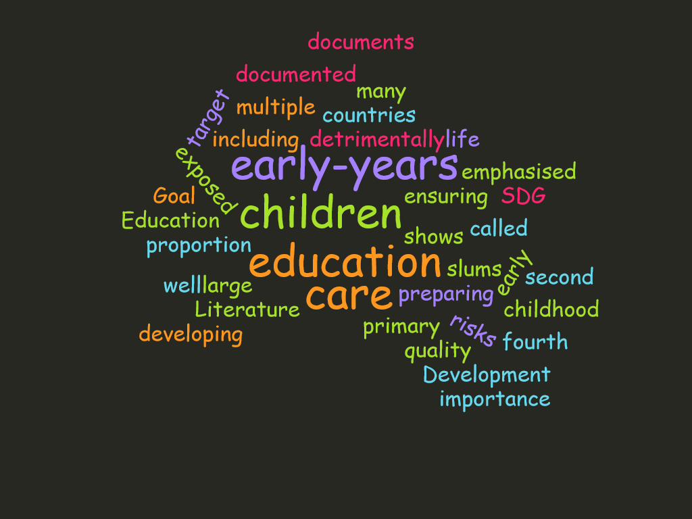

Research Papers

Impact Evaluation Of Microfinance Plus Program Of Brac Uganda
Keywords :
Keywords : Microfinance, Health , Impact , Agriculture , Health
Uploaded by : Proloy Barua
Uploaded : 4 June, 2018
145878 Views

View
Slum Pre-primary Graduates in Primary Education: A Tracer Study on BEHTRUWC-Sibling Project
Keywords :
Keywords : Education, Children , Early-years , Sustainable , Development
Uploaded by : Samir Ranjan Nath, Mohammad Anwar Hossain and Tanjeeba Chowdhury
Uploaded : Monday, 17 June 2019
23445 Views